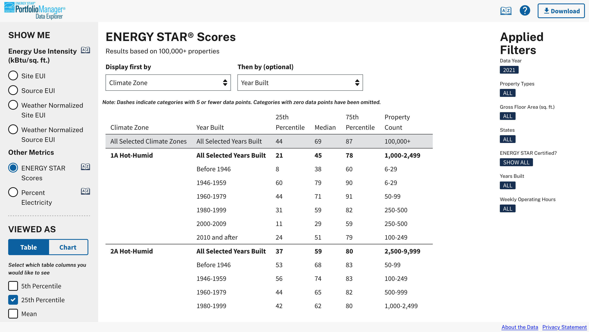

Portfolio Manager Data Explorer
The Portfolio Manager Data Explorer (PMDE) is a tool I helped created at Abt Associates for EPA's ENERGY STAR program. It lets users explore energy use and efficiency data collected from commercial buildings across the USA using a variety of filters and display options. For this project, I served as both lead designer and project manager, leading day-to-day development ceremonies and shepherding our designs through rounds of client and user feedback. You can play around with the data and read more about the project on the live site here.
An example data query in PMDE showing median Site EUI by gross floor area.
Another example data query in PMDE, this time showing ENERGY STAR scores broken down by Climate Zone and Year Built.